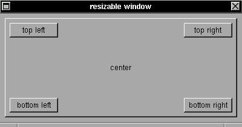

All XSTEP widgets have now support for resizable windows: if you use relative positions to corners of a window (or, of couse, a group widget :), this relative position will be mainted if you resize this window. The basic rules are:EXAMPLEThe zero isn't positive or negative, but if (x,y) are zero, then the position considered to be relative from the top left corner, if (w,h) are zero, then the position is considered to be relative from the bottom right corner of window. The real size of any widget is in fact calculated and stored in (aw,ah) values in the xtree structure of this widget.
- (x,y) positions: positive values are relative from the top left corner of the window, negative values are relative from the bottom right corner of the window.
- (w,h) sizes: positive values are really the width and height sizes for the widget, but negative values are in true relative positions from the bottom right corner of the window.
- negative and positive values for (x,y,w,h) can be mixed in any [possible] combination.
The first button have a (8,8) position relative from top left corner of window and a (-8,-8) position relative from bottom right corner of window (this widget will be placed in the center of window :), all others buttons have a fixed size and a variable set of relative positions.#include <xstep.h> void xmain(int n,char **p) { window_create(0,0,400,180,"resizable window"); button_create( 8, 8, -8, -8, "center", 0); button_create( 16, 16, 80, 24, "top left", 0); button_create( -16, 16, 80, 24, "top right", 0); button_create( 16,-16, 80, 24, "bottom left", 0); button_create( -16,-16, 80, 24, "bottom right", 0); }